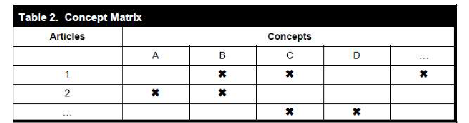

Methodological Foundations
This chapter outlines the methodological foundations for the preparation of this research paper. In order to systematically review the current state of research on AI in auditing and accounting, a structured literature review is conducted in accordance with established academic standards, following a qualitative and conceptual approach.
Conducting a literature review, particularly in the interdisciplinary field of Information Systems, poses a significant challenge for many researchers. Since there is no universal standard approach and research questions and designs vary widely, which at times makes it hard for researchers to find an appropriate ending point. The primary factor here is also the rapidly growing volume of publications about information systems. This uncertainty is exacerbated by the differences and volatility of the databases, which vary in coverage, functionality, and search algorithms, leading to identical search queries yielding different results. Another problem lies in assessing the relevance and quality of the studies found, since Information Systems is a multi-paradigmatic discipline. At the same time, obtaining and managing the literature can also be time-consuming, for example due to lack of access or incomplete metadata. Finally, it is often unclear when a literature search is complete, as the point of saturation is difficult to determine (Vom Brocke et al., 2015, pp. 209–212).
A clearly defined search strategy is therefore essential to make the process manageable, transparent and traceable, as well as to be able to situate one’s own research firmly within the existing scholarly discourse (Vom Brocke et al., 2015, pp. 206, 214). The systematic literature review aims to systematically reconstruct existing knowledge in the field of AI in auditing and forms the methodological foundation of this paper. Only through a thorough review of the state of the art can a reliable basis be established for answering the research question at hand(Webster and Watson, 2002, p. 13).
According to vom Brocke et al. (2015, pp. 214–215), the framework of a structured literature search comprises four central elements:
Process: The decision as to whether the search is conducted sequentially as a defined step at the beginning or iteratively as a continuous learning process throughout the entire project.
Sources: The selection of appropriate scientific databases, specialized journals, or conference proceedings.
Coverage: Determining whether a comprehensive search is the goal or whether the focus is on seminal works.
Technique: The use of specific search methods such as keyword search as well as backward and forward searching.

Literature Review Process
At the outset of the literature review, Webster and Watson (2002) recommend starting with particularly relevant and influential works in leading journals, which serve as a starting point. From here, they advise to use either Backward Search, where the reference lists of the identified core articles are reviewed to find important earlier studies, or Forward Search, where through citation indexes, one determines which more recent publications build upon these works (Webster and Watson, 2002, p. 16). When determining the scope of the search, one must always balance the desired coverage with practical feasibility (Vom Brocke et al., 2015, pp. 216–217). A reasonable endpoint is reached when newly reviewed literature yields no additional insights, indicating that theoretical saturation has been achieved (Vom Brocke et al., 2015, p. 217; Webster and Watson, 2002, p. 16).
The subsequent analysis of the literature is not an author-oriented summary but concept-centered approach, in order to achieve a genuine synthesis of knowledge. To this end, the concept matrix proposed by Webster and Watson is used as the central tool. In this matrix, the identified articles are assigned to the central thematic categories. This makes it possible to recognize patterns in the literature, identify research gaps and to communicate the results to the research community (Webster and Watson, 2002, pp. 16–18).
After conducting the literature review described above, an initial search was performed using Google Scholar to develop a basic understanding of the subject area and identify the first relevant sources. Building on these findings, a systematic search was conducted in the ScienceDirect, IEEE Xplore, and Web of Science databases. The search strategy was based on various combinations of relevant search terms. An example search string was:
("artificial intelligence" OR "machine learning" OR "generative AI" OR automation OR "large language models") AND ("quality management" OR "audit quality" OR "quality control" OR "ISQM 1" OR ISQM or quality) AND (auditing OR "audit firms" OR "accounting firms" OR "public accounting" OR assurance or Audit)
As part of the selection process, only scientific publications from 2020 to 2026 were considered to consider the rapid change in AI, provided they were written in German or English and addressed the use of AI in auditing. Furthermore, only sources that were assessed as suitable for answering the research question in terms of their scientific quality were included. Non-scientific publications, duplicates, and works without sufficient thematic relevance were excluded.
After applying the inclusion and exclusion criteria, a total of 14 sources remained for analysis. The selected works were then systematically evaluated and consolidated into a conceptual matrix. By comparing the central content, recurring themes, connections, and differences between the sources could be identified. The synthesis of the results led to the derivation of categories representing the key application areas of AI in auditing as well as the associated challenges. Due to a lack of studies in the existing literature examining the use of AI in the QM of accounting firms, an indirect analytical approach was chosen. Instead of searching exclusively for studies with a direct reference to QMS, the identified application areas and challenges of AI in auditing were used as the analytical basis. In the subsequent step, the results were conceptually mapped to the quality management requirements of ISQM 1. This allowed for an examination of the extent to which the identified developments influence the quality management of audit firms and what potential and challenges arise for the individual components of the QMS. The categories derived from the literature thus form the basis for the subsequent presentation of results and discussion.